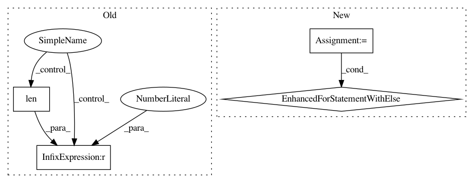

3805aabae59e3ba5b16364f6839c8e20b2399d71,w3af/core/controllers/delay_detection/aprox_delay_controller.py,AproxDelayController,delay_is_controlled,#AproxDelayController#,86
Before Change
return False, responses
else:
multipliers_that_delay.append(multiplier)
if len(set(multipliers_that_delay)) != 1:
return False, responses
return True, responses
After Change
// We want to make sure that the multiplier actually works and
// that the delay is stable
for _ in xrange(3):
original_wait_time = self.get_original_time()
delays, resp = self.multiplier_delays_response(multiplier,
original_wait_time)
responses.append(resp)
if not delays:
break
else:
// All the delays were confirmed, vuln!
return True, responses
return False, responses
def find_delay_multiplier(self, original_wait_time, responses):
for multiplier in self.DELAY_SETTINGS[self.delay_setting]:
In pattern: SUPERPATTERN
Frequency: 3
Non-data size: 4
Instances
Project Name: andresriancho/w3af
Commit Name: 3805aabae59e3ba5b16364f6839c8e20b2399d71
Time: 2017-06-29
Author: andres.riancho@gmail.com
File Name: w3af/core/controllers/delay_detection/aprox_delay_controller.py
Class Name: AproxDelayController
Method Name: delay_is_controlled
Project Name: mne-tools/mne-python
Commit Name: 2dd49058dba6cf1527e2414221d4b08b127f96d5
Time: 2019-04-24
Author: larson.eric.d@gmail.com
File Name: mne/forward/forward.py
Class Name:
Method Name: _restrict_gain_matrix
Project Name: etal/cnvkit
Commit Name: 4e001068d2d8a3b59fe48bc4ca6aab4ce5860e98
Time: 2016-05-09
Author: eric.talevich@gmail.com
File Name: cnvlib/segmentation/__init__.py
Class Name:
Method Name: seg2cns